4 Where is Tito?
4.1 See the results on a map
TitoGmapsResults <- ImportData(filename = "TitoGmapsResults")
# Preparing the canvas, and forcing cache
wb <- c(left = 12, bottom = 40, right = 26, top = 48)
if (file.exists(file.path("temp", "mapTonerLite.rds"))==FALSE) {
saveRDS(object = ggmap::get_stamenmap(bbox = wb, zoom = 6, maptype = "toner-lite") %>% ggmap(), file = file.path("temp", "mapTonerLite.rds"))
}
mapTonerLite <- readRDS(file = file.path("temp", "mapTonerLite.rds"))
TitoGmapsResults_point_gg <-
mapTonerLite + geom_point(data=TitoGmapsResults, aes(x=lon, y=lat), color="brown", size=2, alpha=0.5) +
labs(x = '', y = '') + labs(title = "Streets and squares dedicated to Tito in the former Yugoslavia", caption = "Source: Google Maps; https://giorgiocomai.eu/FindingTito")
TitoGmapsResults_point_gg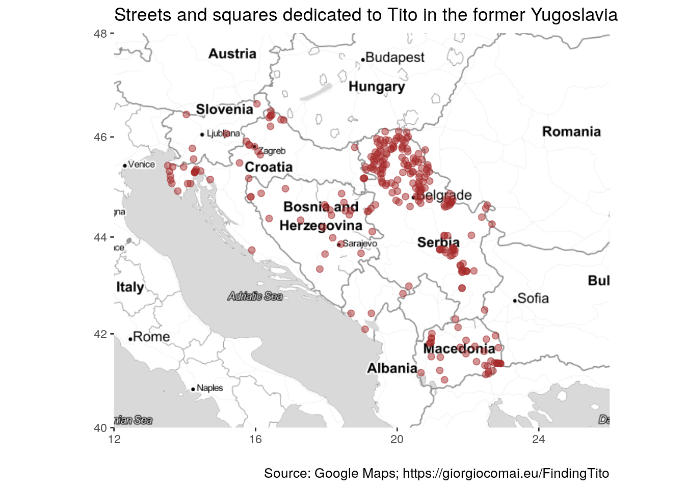
ExportGraph(graph = TitoGmapsResults_point_gg, filename = "TitoGmapsResults_point_gg")This image is available for download in .png, .svg, and as an object in R’s .rds format.
{kind=link}
{kind=link}
Comparing with OpenStreetMaps results
mapTonerLite + geom_point(data=ImportData("OSM_tito_all"), aes(x=lon, y=lat), color="orange", size=2, alpha=0.5) +
labs(x = '', y = '') + labs(title = "Streets and squares dedicated to Tito", subtitle = paste("(based on OpenStreetMap data as of", Sys.Date(), ")"))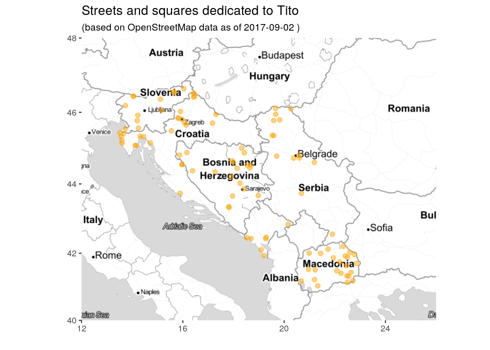
On the same map:
OSM_gmaps_Tito <- bind_rows(TitoGmapsResults, ImportData("OSM_tito_all") %>% select(lon, lat), .id = "Source")
mapTonerLite + geom_point(data=OSM_gmaps_Tito, aes(x=lon, y=lat, color = Source), size=2, alpha=0.5) +
labs(x = '', y = '') + labs(title = "Streets and squares dedicated to Tito")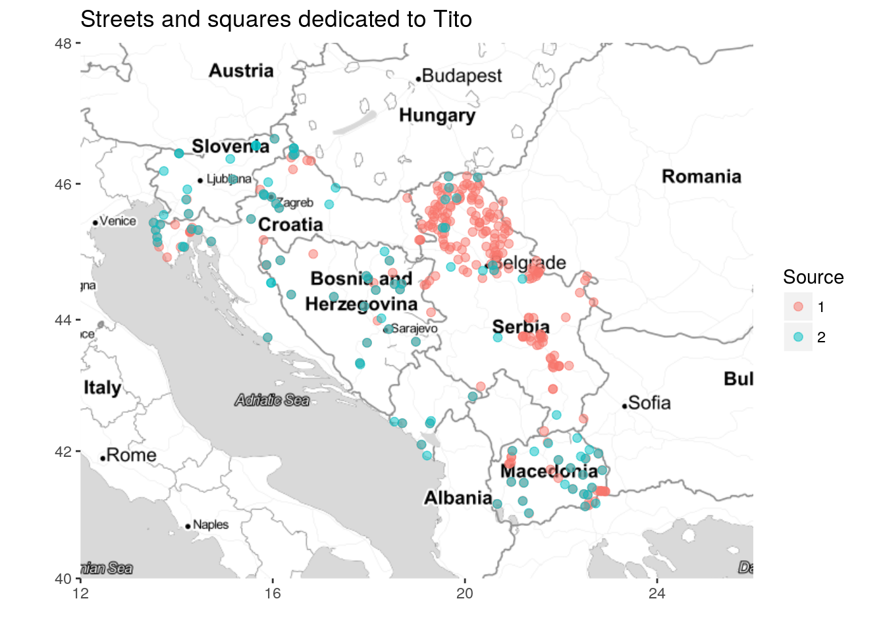
4.2 Density visualisations
TitoGmaps_density_gg <- mapTonerLite +
stat_density2d(
aes(x = lon, y = lat, fill = ..level.., alpha = ..level..),
size = 2, bins = 8, data = TitoGmapsResults,
geom = "polygon"
) + labs(title = "Streets and squares dedicated to Tito in the former Yugoslavia", caption = "Source: Google Maps; https://giorgiocomai.eu/FindingTito") + theme(legend.position="none")
TitoGmaps_density_gg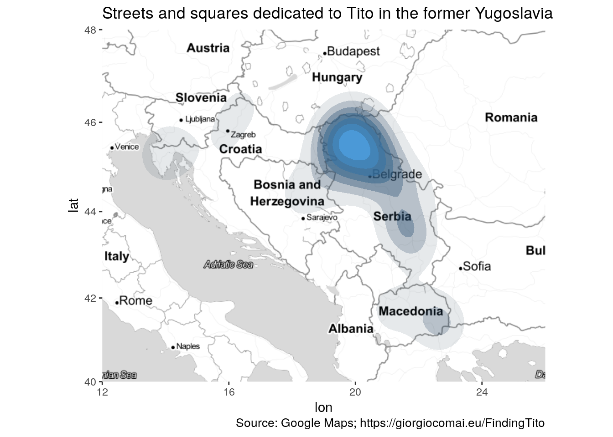
ExportGraph(graph = TitoGmaps_density_gg, filename = "TitoGmaps_density_gg")This image is available for download in .png, .svg, and as an object in R’s .rds format.
{kind=link}
{kind=link}
TitoGmaps_density_sq_gg <-
mapTonerLite + stat_bin2d(
aes(x = lon, y = lat),
size = .5, bins = 20, alpha = 1/2,
data = TitoGmapsResults) +
scale_fill_gradient(low = "#ffffb2", high = "#bd0026") +
labs(title = "Streets and squares dedicated to Tito in the former Yugoslavia", caption = "Source: Google Maps; https://giorgiocomai.eu/FindingTito")
TitoGmaps_density_sq_gg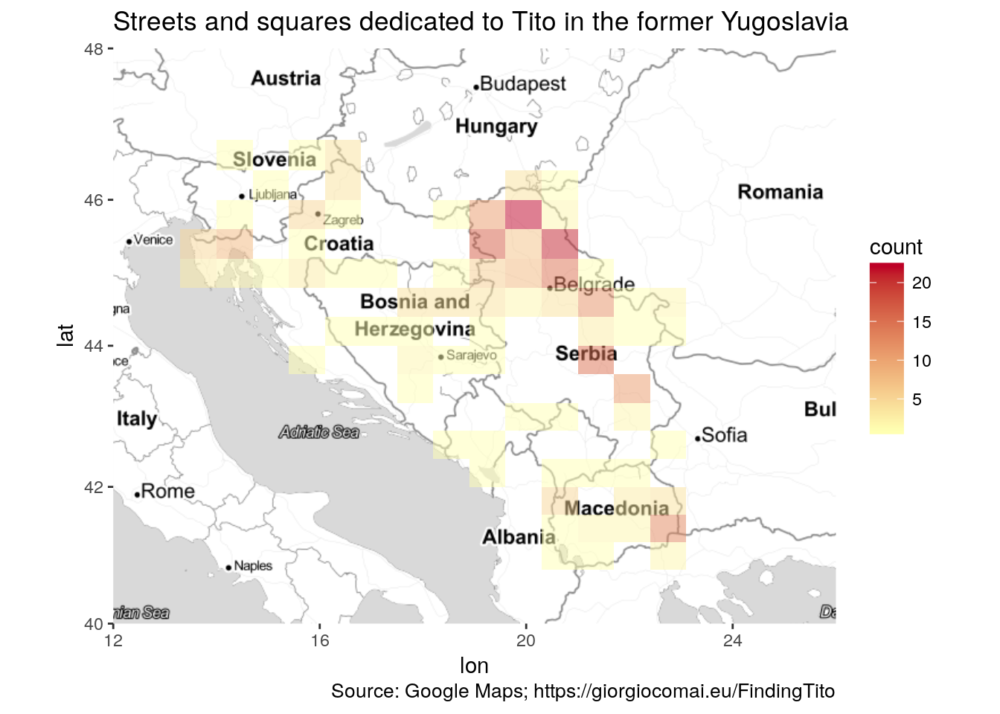
ExportGraph(graph = TitoGmaps_density_sq_gg, filename = "TitoGmaps_density_sq_gg")This image is available for download in .png, .svg, and as an object in R’s .rds format.
{kind=link}
{kind=link}
4.3 By country / Administrative level
At the sub-country level, Google Maps records two levels of administrative sub-divisions. Unfortunately, not all streets are recorded with the respective sub-division, and the categorisation does not seem to be consistent.
N.B.: names of countries and administrative units are here presented exactly as they are outputted by the Google APIs. The author is thus not responsible for the uneven trasliteration, or for the names chosen to refer to countries or administrative units.
TitoGmapsMore <- bind_rows(ImportData(filename = "titovResults"), ImportData("marsalaTitaResults")) %>%
filter(type=="route", country != "Italy") %>% # exclude non-YU and non streets/squares
filter(grepl(pattern = "Tit|Tит", x = route)) %>% # remove most non-tito
filter(!grepl(pattern = "Strozzi|Brezova", x = route)) %>% # remove remaining non-Tito
distinct(address, .keep_all = TRUE) %>% # remove those with same address
distinct(locality, route, .keep_all = TRUE) %>% #remove same locality, same street name
distinct(lon, lat, route, administrative_area_level_1, administrative_area_level_2, country)
TitoGmapsByCountry <- bind_rows(TitoGmapsMore %>% count(country, sort = TRUE),
data_frame(country = "Kosovo", n = 0))
# manually adding Kosovo = 0
ShowTable(data = TitoGmapsByCountry, caption = "Streets and squares dedicated to Tito in the former Yugoslavia, by country, according to Google Maps/#FindingTito")| country | n |
|---|---|
| Serbia | 173 |
| Croatia | 38 |
| Macedonia (FYROM) | 36 |
| Bosnia and Herzegovina | 23 |
| Slovenia | 5 |
| Montenegro | 4 |
| Kosovo | 0 |
ExportData(data = TitoGmapsByCountry, filename = "TitoGmapsByCountry")The data are available as a spreadsheet in .csv, .xlsx, and as a data frame in R’s .rds format.
TitoGmapsByCountry_gg <- ImportData(filename = "TitoGmapsByCountry") %>% mutate(country = forcats::fct_inorder(country)) %>%
ggplot(mapping = aes(x = country, y = n, label = n)) +
geom_col() +
geom_text(nudge_y = 5) +
scale_x_discrete(name = "") +
scale_y_continuous(name = "") +
theme_minimal() +
coord_flip() +
labs(title = "Number of streets dedicated to Tito in the former Yugoslavia", subtitle = "(by country)", caption = "Source: Google Maps; https://giorgiocomai.eu/FindingTito")
TitoGmapsByCountry_gg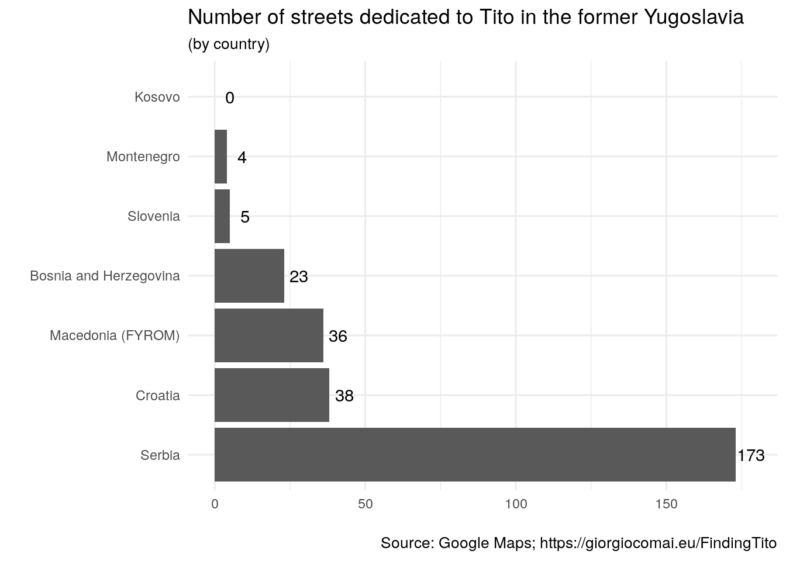
ExportGraph(graph = TitoGmapsByCountry_gg, filename = "TitoGmapsByCountry_gg")This image is available for download in .png, .svg, and as an object in R’s .rds format.
{kind=link}
{kind=link}
ShowTable(TitoGmapsMore %>% count(administrative_area_level_1, country, sort = TRUE))| administrative_area_level_1 | country | n |
|---|---|---|
| Vojvodina | Serbia | 112 |
| NA | Serbia | 61 |
| Federacija Bosne i Hercegovine | Bosnia and Herzegovina | 21 |
| Istarska županija | Croatia | 10 |
| Primorsko-goranska županija | Croatia | 8 |
| Međimurska županija | Croatia | 7 |
| Municipality of Novo Selo | Macedonia (FYROM) | 6 |
| Gostivar | Macedonia (FYROM) | 3 |
| Vukovarsko-srijemska županija | Croatia | 3 |
| Zagrebačka županija | Croatia | 3 |
| NA | Croatia | 3 |
| Municipality of Bogdanci | Macedonia (FYROM) | 2 |
| Republika Srpska | Bosnia and Herzegovina | 2 |
| Strumitsa | Macedonia (FYROM) | 2 |
| Valandovo | Macedonia (FYROM) | 2 |
| NA | Macedonia (FYROM) | 2 |
| Delchevo | Macedonia (FYROM) | 1 |
| Dojran | Macedonia (FYROM) | 1 |
| Glavni grad Podgorica | Montenegro | 1 |
| Gornja Radgona | Slovenia | 1 |
| Ilirska Bistrica | Slovenia | 1 |
| Jesenice | Slovenia | 1 |
| Karlovačka županija | Croatia | 1 |
| Laško | Slovenia | 1 |
| Municipality of Berovo | Macedonia (FYROM) | 1 |
| Municipality of Bitola | Macedonia (FYROM) | 1 |
| Municipality of Bogovinje | Macedonia (FYROM) | 1 |
| Municipality of Demir Hisar | Macedonia (FYROM) | 1 |
| Municipality of Demir Kapija | Macedonia (FYROM) | 1 |
| Municipality of Gevgelija | Macedonia (FYROM) | 1 |
| Municipality of Gradsko | Macedonia (FYROM) | 1 |
| Municipality of Kichevo | Macedonia (FYROM) | 1 |
| Municipality of Kumanovo | Macedonia (FYROM) | 1 |
| Municipality of Makedonski Brod | Macedonia (FYROM) | 1 |
| Municipality of Shtip | Macedonia (FYROM) | 1 |
| Municipality of Struga | Macedonia (FYROM) | 1 |
| Municipality of Veles | Macedonia (FYROM) | 1 |
| Municipality of Vinica | Macedonia (FYROM) | 1 |
| Opština Rožaje | Montenegro | 1 |
| Opština Tivat | Montenegro | 1 |
| Osječko-baranjska županija | Croatia | 1 |
| Postojna | Slovenia | 1 |
| Radovish | Macedonia (FYROM) | 1 |
| Šibensko-kninska županija | Croatia | 1 |
| Sveti Nikole | Macedonia (FYROM) | 1 |
| Tetovo | Macedonia (FYROM) | 1 |
| Varaždinska županija | Croatia | 1 |
| NA | Montenegro | 1 |
ExportData(data = TitoGmapsMore %>% count(administrative_area_level_1, country, sort = TRUE), filename = "TitoGmapsByAdmin1")The data are available as a spreadsheet in .csv, .xlsx, and as a data frame in R’s .rds format.
ShowTable(TitoGmapsMore %>% count(administrative_area_level_2, country, sort = TRUE))| administrative_area_level_2 | country | n |
|---|---|---|
| NA | Macedonia (FYROM) | 36 |
| Srednjobanatski okrug | Serbia | 26 |
| Nišavski okrug | Serbia | 19 |
| Južnobački okrug | Serbia | 18 |
| Severnobanatski okrug | Serbia | 16 |
| Južnobanatski okrug | Serbia | 15 |
| Braničevski okrug | Serbia | 12 |
| Severnobački okrug | Serbia | 11 |
| Sremski оkrug | Serbia | 11 |
| Zapadnobački okrug | Serbia | 11 |
| Grad Beograd | Serbia | 6 |
| Rasinski Okrug | Serbia | 6 |
| NA | Croatia | 6 |
| Borski okrug | Serbia | 5 |
| Tuzlanski kanton | Bosnia and Herzegovina | 5 |
| Zeničko-dobojski kanton | Bosnia and Herzegovina | 5 |
| NA | Serbia | 5 |
| NA | Slovenia | 5 |
| Mačvanski okrug | Serbia | 4 |
| Unsko-sanski kanton | Bosnia and Herzegovina | 4 |
| NA | Montenegro | 4 |
| Općina Nijemci | Croatia | 3 |
| Pomoravski okrug | Serbia | 3 |
| Hercegovačko-neretvanski kanton | Bosnia and Herzegovina | 2 |
| Jablanički okrug | Serbia | 2 |
| Općina Lovran | Croatia | 2 |
| Općina Opatija | Croatia | 2 |
| Općina Velika Gorica | Croatia | 2 |
| Pčinjski Okrug | Serbia | 2 |
| NA | Bosnia and Herzegovina | 2 |
| Bosansko-podrinjski kanton | Bosnia and Herzegovina | 1 |
| Kanton 10 | Bosnia and Herzegovina | 1 |
| Kanton Sarajevo | Bosnia and Herzegovina | 1 |
| Matulji | Croatia | 1 |
| Općina Buje | Croatia | 1 |
| Općina Buzet | Croatia | 1 |
| Općina Čakovec | Croatia | 1 |
| Općina Crikvenica | Croatia | 1 |
| Općina Donji Vidovec | Croatia | 1 |
| Općina Fažana | Croatia | 1 |
| Općina Karlovac | Croatia | 1 |
| Općina Kneževi Vinogradi | Croatia | 1 |
| Općina Labin | Croatia | 1 |
| Općina Marija Gorica | Croatia | 1 |
| Općina Mursko Središće | Croatia | 1 |
| Općina Nedelišće | Croatia | 1 |
| Općina Novigrad | Croatia | 1 |
| Općina Poreč | Croatia | 1 |
| Općina Raša | Croatia | 1 |
| Općina Rijeka | Croatia | 1 |
| Općina Rovinj | Croatia | 1 |
| Općina Šibenik | Croatia | 1 |
| Općina Sveta Marija | Croatia | 1 |
| Općina Umag | Croatia | 1 |
| Općina Varaždinske Toplice | Croatia | 1 |
| Općina Vrsar | Croatia | 1 |
| Raški okrug | Serbia | 1 |
| Srednjobosanski kanton | Bosnia and Herzegovina | 1 |
| Zeničko-dobojska županija | Bosnia and Herzegovina | 1 |
ExportData(data = TitoGmapsMore %>% count(administrative_area_level_2, country, sort = TRUE), filename = "TitoGmapsByAdmin2")The data are available as a spreadsheet in .csv, .xlsx, and as a data frame in R’s .rds format.
4.4 By street name
This is colourful, but not very useful, since it mostly points at the different ways in which Google Maps stores street names.
ShowTable(TitoGmapsResults %>% count(route, sort = TRUE))| route | n |
|---|---|
| Maršala Tita | 179 |
| Marshal Tito | 25 |
| Ulica Maršala Tita | 25 |
| Marsal Tito | 7 |
| Trg Maršala Tita | 6 |
| Trg maršala Tita | 5 |
| Titova | 4 |
| Obala maršala Tita | 3 |
| Josipa Broza Tita | 2 |
| Titov trg | 2 |
| Trg Josipa Broza Tita | 2 |
| Ulica Josipa Broza Tita | 2 |
| Aleja Maršala Tita | 1 |
| Bulevar Maršal Tito | 1 |
| Cesta maršala Tita | 1 |
| Kej Marshal Tito | 1 |
| Marsala Tita Road | 1 |
| Marsala Tita Ulica | 1 |
| Marshal Tito Street | 1 |
| Obala Josipa Broza Tita | 1 |
| Poljana Maršala Tita | 1 |
| Šetalište maršala Tita | 1 |
| Tito marsall | 1 |
| Titova cesta | 1 |
| Titova ulica | 1 |
| Titova Uzhichka | 1 |
| Ulica maršala Tita | 1 |
| Ulica Titov Trg | 1 |
| Ulica Titova riva | 1 |
mapTonerLite +
geom_point(data=TitoGmapsResults, aes(x=lon, y=lat, color = route), size=2, alpha=0.5) +
labs(x = '', y = '') + labs(title = "Streets and squares dedicated to Tito")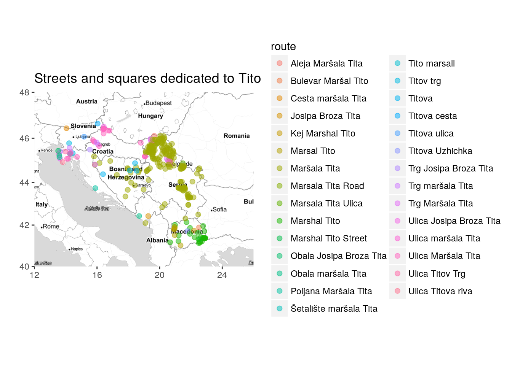
mapTonerLite + stat_bin2d(
aes(x = lon, y = lat, fill = route, colour = route),
size = .5, bins = 20, alpha = 1/2,
data = TitoGmapsResults)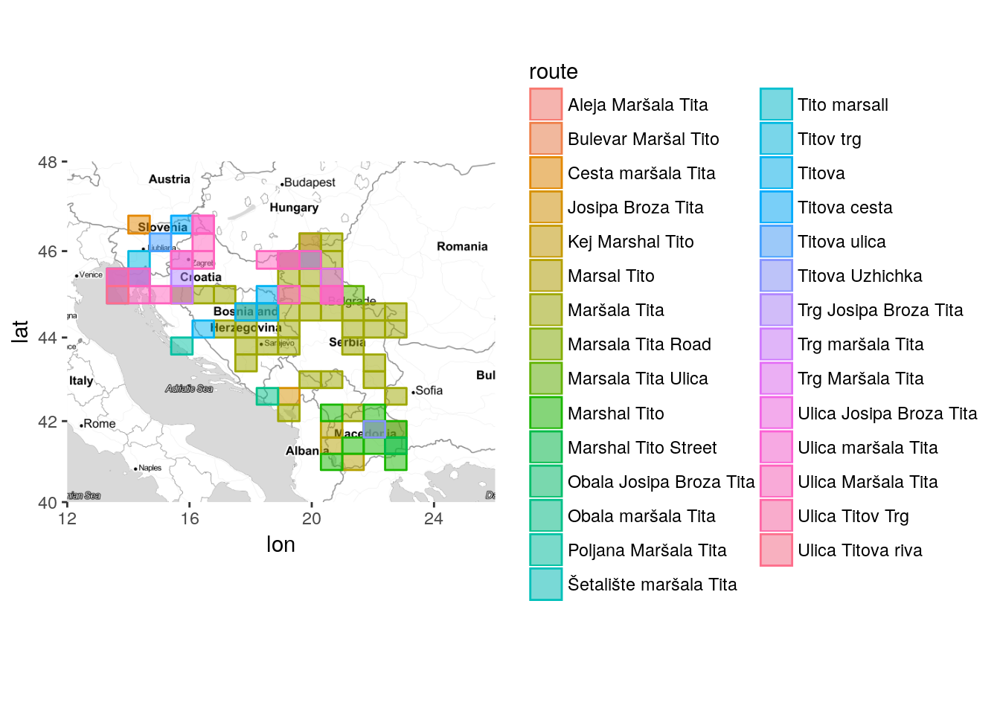
Keeping only street names found more than once.
mapTonerLite + stat_bin2d(
aes(x = lon, y = lat, fill = route, colour = route),
size = .5, bins = 20, alpha = 1/2,
data = left_join(TitoGmapsResults, TitoGmapsResults %>% count(route)) %>% filter(n>1))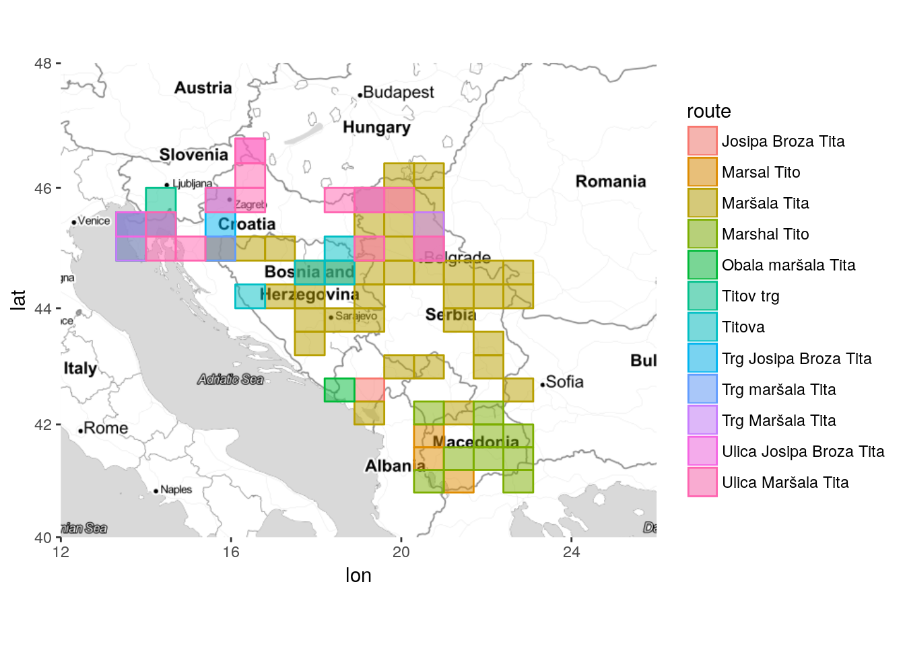 Or more than twice.
mapTonerLite + stat_bin2d(
aes(x = lon, y = lat, fill = route, colour = route),
size = .5, bins = 20, alpha = 1/2,
data = left_join(TitoGmapsResults, TitoGmapsResults %>% count(route)) %>% filter(n>2))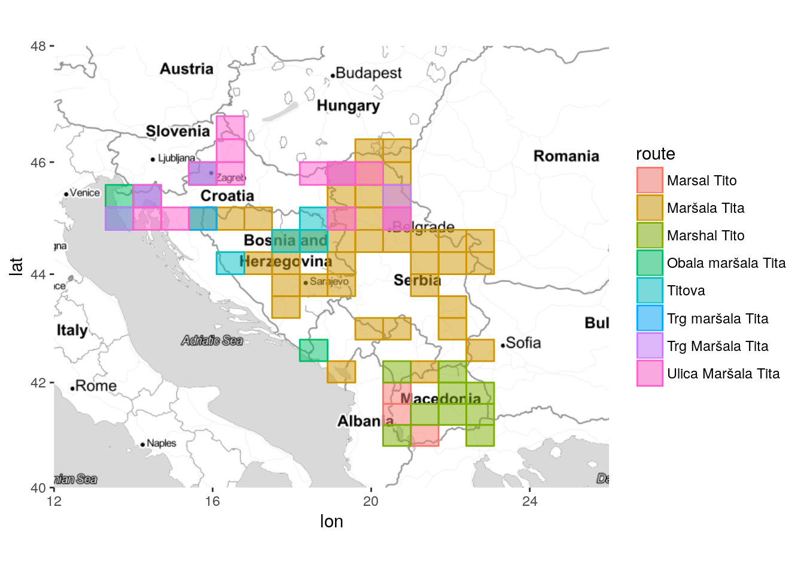
mapTonerLite +
geom_point(data=left_join(TitoGmapsResults, TitoGmapsResults %>% count(route)) %>%
filter(n>2),
aes(x=lon, y=lat, color = route), size=2, alpha=0.5) +
labs(x = '', y = '') +
labs(title = "Streets and squares dedicated to Tito")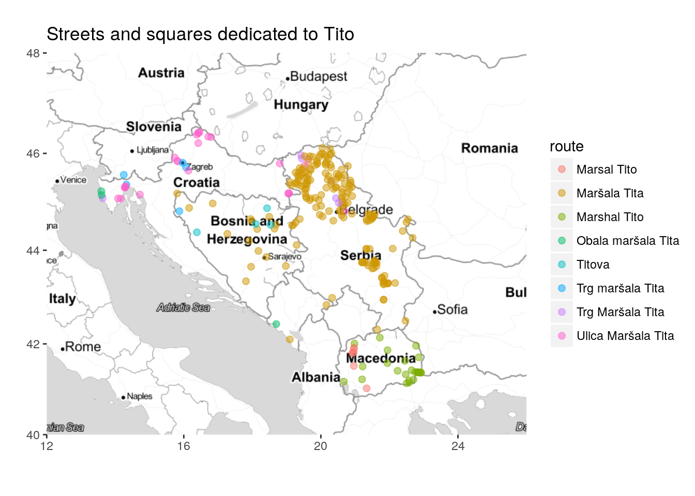